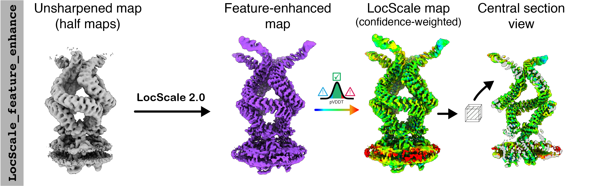

LocScale 2.0
Confidence-weighted cryoEM map optimisation
LocScale 2.0 is an automated program for physics-informed local sharpening and/or density modification of cryo-EM maps with the aim to improve their interpretability. It utilises general properties inherent to electron scattering from biological macromolecules to restrain the sharpening filter. These can either inferred directly from the experimental density map, or be provided from an existing atomic model.
What's new in LocScale 2.0
- Feature-enhanced maps: Confidence-weighted map optimisation by variational inference.
- Hybrid sharpening: Reference-based local sharpening with partial (incomplete) models.
- Model-free sharpening: Reference-based local sharpening without atomic models.
- LocScale-SURFER: ChimeraX plugin to toggle contextual structure in
LocScalemaps - Complete automation of the map optimisation process
- Full support for point group symmetry (helical symmetry to follow).
Different flavours for different purposes
LocScale 2.0 comes with different modes and flavours to perform map optimisation, each with its own advantages. Please browse through the description of the different modes for usage instructions and/or scroll down to a brief guide to choose the best method for your problem.
-
LocScale-FEM
Feature-Enhanced Maps with confidence weighting. Recommended for most cases.

-
Hybrid LocScale
Physics-based map optimisation optimally retaining contextual structure.

-
Model-free LocScale
Automated local sharpening without model information. Fast and easy.
-
Model-based LocScale
Legacy LocScale with model information. Still useful in many cases.

How does LocScale 2.0 work?
LocScale 2.0 integrates physics-informed and deep learning-based map optimisation. Physical priors for map sharpening are based on established knowledge about expected properties of electron scattering by biological macromolecules [1-3]. Alternatively, a deep convolutional neural network, EMmerNet, trained on pairs of unmodified maps and maps optimised with the physics-informed scaling procedure can be used to predict local scale estimates. This information is then fed into a windowed scaling procedure to produce locally sharpened maps. Both of these workflows are map sharpening procedures that operate in Fourier space, where structure factor amplitudes are corrected but map phases are locally unchanged. In a third workflow LocScale-FEM, a Bayesian-approximate implementation of EMmerNet is used to predict an optimised map (which we call feature-enhanced map) along with its uncertainties. This procedure operates in real space and affects both amplitudes and phases akin to density modification. LocScale 2.0 computes a voxel-wise confidence score that quantifies the uncertainty of this prediction, which can be mapped onto the map to guide interpretation.
What are we looking at here?
Example of map optimisation with LocScale 2.0 using the feature_enhance option. LocScale 2.0 attempts to simultaneously enhance high-resolution structural detail and improve contrast of low(er) resolution map regions associated with flexible subunits, partial occupancy and contextual structure such as detergent micelles.

Which map optimisation procedure should I use?
LocScale 2.0 supports several different workflows for automated, physics-informed map optimisation. Three of them fall into the category of local sharpening methods (i.e. they function as Fourier filters), and one ––feature-enhanced maps–– is a map optimisation methods akin to density modification. The different methods serve different needs and we will try to guide choosing the right approach for different scenarios below.

In general we recommend using locscale_feature_enhance for map optimisation in LocScale 2.0 whenever applicable. We have found this procedure to work robustly in a majority of cases and to provide the best compromise in preserving high-resolution detail and enhancing contrast of flexible or lower occupancy regions and contextual structures such as micelles.
Hybrid LocScale will be most useful in cases where preservation of contextual structure is of high importance and/or where a purely physics-driven map optimisation process is desirable, e.g if features to be optimised will likely fall outside the training data of EMmerNEt (e.g. sub-tomogram averages from in situ cryoET). If partial model information is available we recommend using all parts of the atomic model that can be reliably placed.
Model-free LocScale is the quickest method for local sharpening and most useful for rapid testing of the effect of local sharpening, and for cases where physics-based amplitude scaling is desired but no partial model-information is available.
Model-based LocScale is the legacy method for reference-based local sharpening using atomic model information. This can still be a useful LocScale mode many cases that takes full advantage of physical contraints.